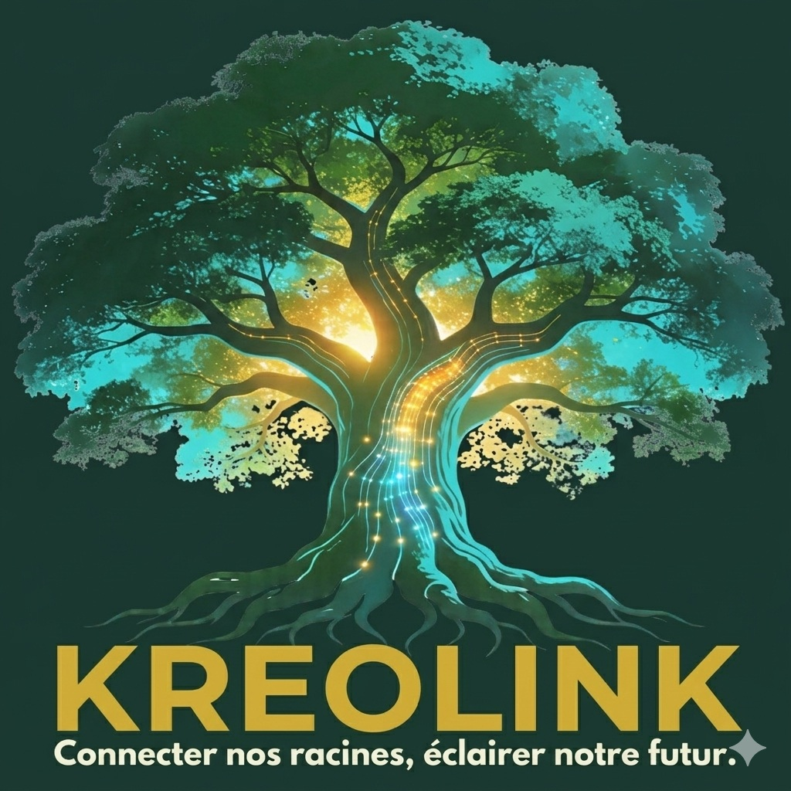
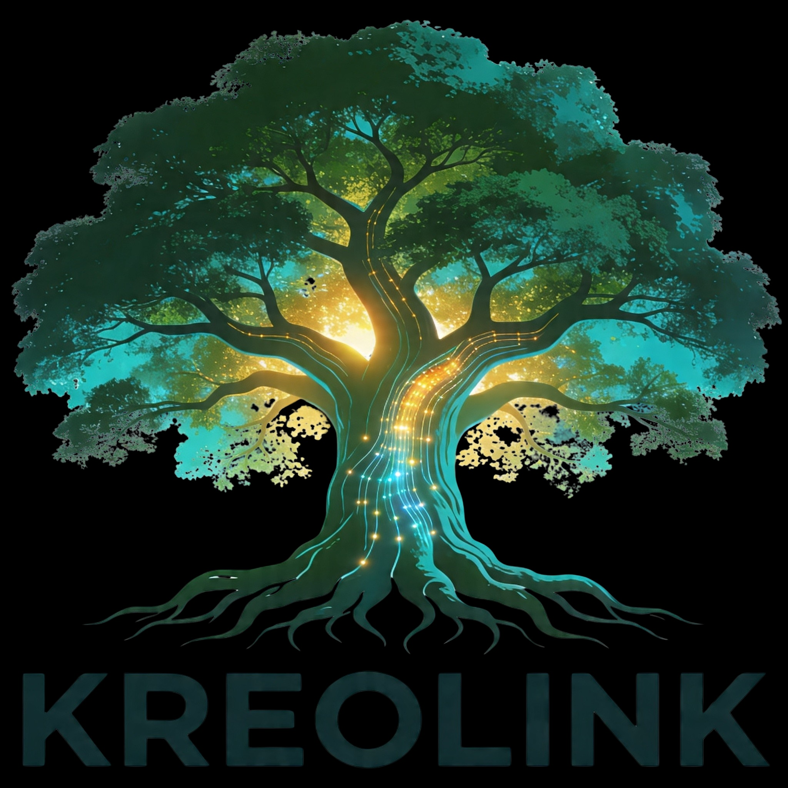

Éclairer notre futur • Pont numérique caribéen
D'origine guadeloupéenne et chef de projet en informatique, j'ai conçu Kreolink comme une réponse à un besoin personnel : rester connectée à mon archipel tout en embrassant les outils de demain.
C’est la rencontre entre la rigueur de l'ingénierie et la passion pour la culture caribéenne. En tant que créatrice, j'ai choisi de rester dans l'ombre pour laisser toute la lumière à l'information et à l'authenticité de nos récits.
Ma mission : Transformer la donnée en émotion, et la distance en proximité grâce à l'IA.

Réduire la distance physique et émotionnelle entre la diaspora et la terre natale.
Un pont numérique fiable utilisant la puissance de l'IA pour synthétiser l'actualité.
L'essentiel de l'info caribéenne condensée en formats vidéos impactants.
Nous automatisons la veille grâce à NotebookLM, permettant de traiter des milliers de sources locales pour n'en extraire que la substance nécessaire à la diaspora.
VEILLE AUGMENTÉE
Curation intelligente des sources officielles et médias locaux de tout l'archipel.
SYNTHÈSE SCRIPTÉE
Adaptation des récits complexes pour un format vidéo court, dynamique et impactant.
PRODUCTION FACELESS
Focus total sur l'image et le message. La technologie s'efface devant la culture.
INTELLIGENCE
Propulsé par Google AI